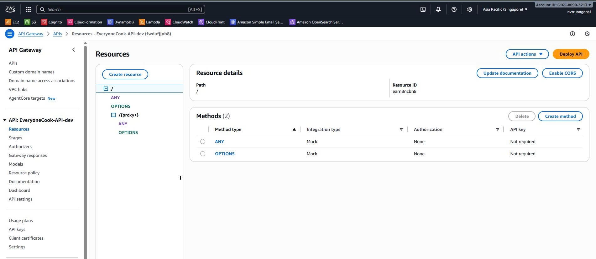
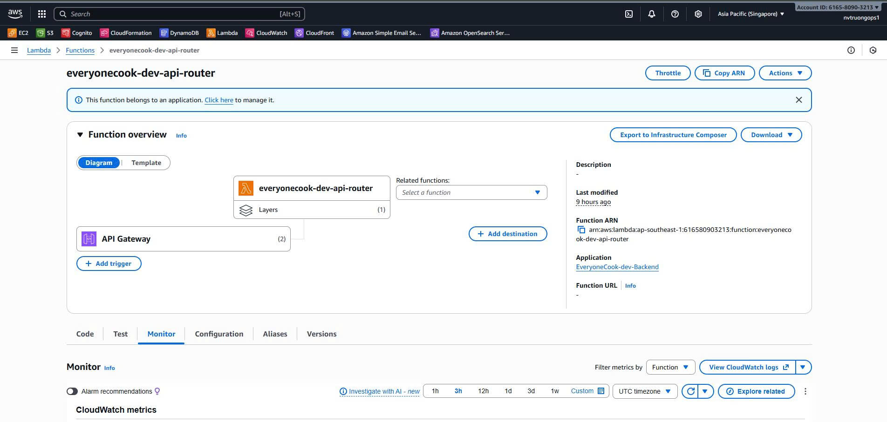
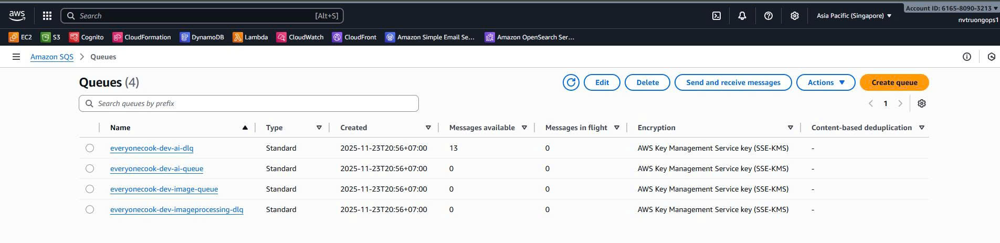
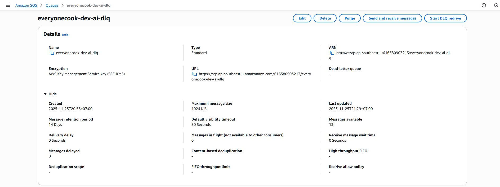
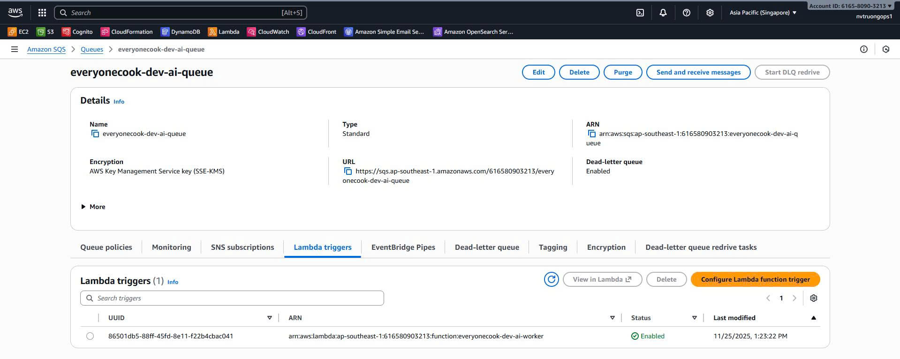
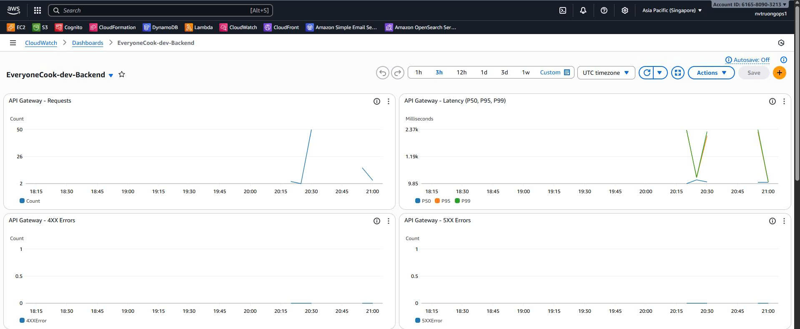
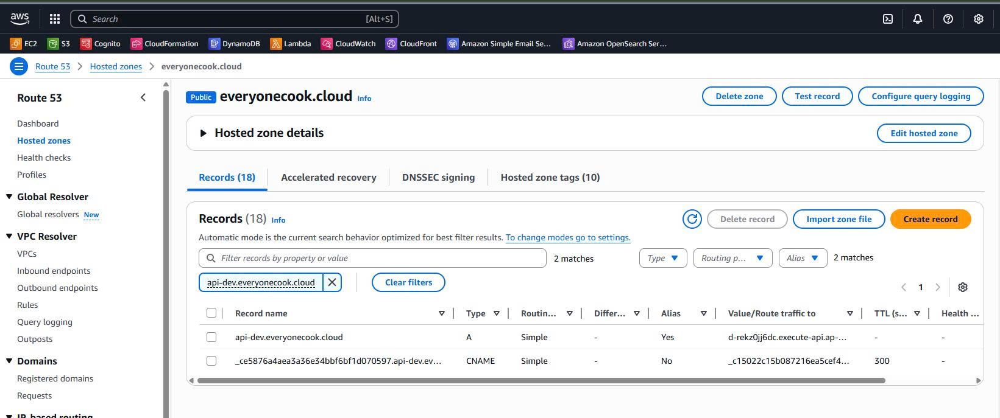

5.4.5 Backend Stack
Backend Stack - Application Layer
Overview
The Backend Stack is the Phase 4 application layer of the EveryoneCook infrastructure. It consolidates the API Gateway, Lambda functions, SQS queues, and WAF security into a unified backend architecture.
Deployment Order: This stack MUST be deployed after Core Stack and Auth Stack.
⚠️ Environment Note: This guide focuses on Development (dev) environment deployment. For staging/production deployments, see Environment Differences section.
Key Responsibilities
- Create API Gateway REST API with custom domain
- Deploy 6 Lambda functions (API Router + 5 business modules)
- Configure 2 active SQS queues for async processing (AI, Image queues with DLQs)
- Deploy 2 worker Lambda functions for event processing (AI Worker, Image Worker)
- Setup WAF Web ACL for API Gateway protection
- Configure CloudWatch monitoring and alarms
What’s Actually Running:
- 8 Lambda Functions (6 business + 2 workers)
- 4 SQS Queues deployed (AI + Image queues with their DLQs)
- 1 WAF Web ACL with 5 security rules
- CloudWatch Logs and Alarms
What This Stack Includes
API Gateway (Dev Environment):
- Custom domain:
api-dev.everyonecook.cloud - ACM certificate for HTTPS (Regional - ap-southeast-1)
- Cognito authorizer for JWT validation
- Caching: Disabled (enabled only in production)
- Compression: Enabled (gzip/deflate for responses >1KB)
- Rate limiting: 10K req/sec, burst 5K
- Request validation: Body, parameters, headers
- Data trace logging: Enabled (disabled in production)
Lambda Functions (6 functions - Dev Environment):
- API Router (
everyonecook-dev-api-router): Routes requests to target Lambda functions - Auth & User (
everyonecook-dev-auth-user): Authentication, user profiles, privacy settings - Social (
everyonecook-dev-social): Posts, comments, reactions, friends, notifications - Recipe & AI (
everyonecook-dev-recipe-ai): Recipe CRUD, AI generation, search, trending - Admin (
everyonecook-dev-admin): Content moderation, user management, appeals - Upload (
everyonecook-dev-upload): S3 presigned URLs, file uploads
Source Code: All functions located in services/ directory
SQS Queues (2 active queues + 2 DLQs):
- AI Queue (
everyonecook-dev-ai-queue): Bedrock AI recipe generation (2-minute timeout) → AI Worker - Image Queue (
everyonecook-dev-image-queue): S3 image optimization (60-second timeout) → Image Worker
Note: Analytics and Notification queues are defined in code but NOT deployed. Notifications are handled directly in Social Module.
Worker Lambda Functions (2 workers actively deployed):
- AI Worker (
ai-module/workers/): Processes AI generation jobs from AI Queue using Bedrock Claude 3 Haiku - Image Worker (
image-worker/): Processes image optimization from Image Queue (resize, compress, watermark)
WAF Web ACL:
- Rate limiting: 2000 req/5min per IP
- SQL injection protection (AWS Managed)
- XSS protection (AWS Managed)
- Known bad inputs (AWS Managed)
- Request size limit: 10MB max
Architecture
┌──────────────────────────────────────────────────────────────────────┐
│ Backend Stack (Phase 4 - Dev Environment) │
│ │
│ ┌─────────────────────────────────────────────────────────────────┐ │
│ │ WAF Web ACL (REGIONAL) - API Gateway Protection │ │
│ │ ├─ Rate Limiting: 2000 req/5min per IP │ │
│ │ ├─ SQL Injection Protection (AWS Managed) │ │
│ │ ├─ XSS Protection (AWS Managed) │ │
│ │ ├─ Known Bad Inputs (AWS Managed) │ │
│ │ └─ Request Size Limit: 10MB max │ │
│ └─────────────────────────────────────────────────────────────────┘ │
│ │ │
│ ▼ │
│ ┌─────────────────────────────────────────────────────────────────┐ │
│ │ API Gateway REST API │ │
│ │ ├─ Custom Domain: api.everyonecook.cloud │ │
│ │ ├─ ACM Certificate (Regional - ap-southeast-1) │ │
│ │ ├─ Cognito Authorizer (JWT validation) │ │
│ │ ├─ Caching: 0.5GB, 5-min TTL (prod only) │ │
│ │ ├─ Compression: gzip/deflate (>1KB) │ │
│ │ ├─ Rate Limiting: 10K req/sec, burst 5K │ │
│ │ └─ Request Validation: Body, params, headers │ │
│ └─────────────────────────────────────────────────────────────────┘ │
│ │ │
│ ▼ │
│ ┌─────────────────────────────────────────────────────────────────┐ │
│ │ Lambda Function: API Router (512MB, 30s timeout) │ │
│ │ ├─ JWT Validation & User Context Extraction │ │
│ │ ├─ Request Routing to Target Lambda Functions │ │
│ │ └─ Error Handling & Response Formatting │ │
│ └─────────────────────────────────────────────────────────────────┘ │
│ │ │
│ ┌────────────────┼────────────────┬──────────────────┐ │
│ ▼ ▼ ▼ ▼ │
│ ┌─────────┐ ┌─────────┐ ┌─────────┐ ┌─────────┐ │
│ │ Auth & │ │ Social │ │ Recipe │ │ Admin │ │
│ │ User │ │ Module │ │ & AI │ │ Module │ │
│ │ Lambda │ │ Lambda │ │ Lambda │ │ Lambda │ │
│ │ (512MB) │ │ (512MB) │ │ (512MB) │ │ (512MB) │ │
│ └─────────┘ └─────────┘ └─────────┘ └─────────┘ │
│ │ │ │
│ ▼ ▼ │
│ ┌─────────────────────────────────────────────────────────────────┐ │
│ │ SQS Queues + Worker Lambdas │ │
│ │ │ │
│ │ 1️⃣ AI Queue → AI Worker (1024MB, 60s) │ │
│ │ ├─ Bedrock Claude 3 Haiku (us-east-1) │ │
│ │ ├─ Recipe generation from ingredients │ │
│ │ └─ Visibility timeout: 2 minutes │ │
│ │ │ │
│ │ 2️⃣ Image Queue → Image Worker (512MB, 60s) │ │
│ │ ├─ S3 image optimization │ │
│ │ ├─ Resize, compress, watermark │ │
│ │ └─ Visibility timeout: 60 seconds │ │
│ │ │ │
│ │ 📌 Only 2 queues actively used (AI & Image) │ │
│ │ 📌 Analytics & Notification queues exist but no workers │ │
│ │ 📌 All queues have DLQ (14-day retention) │ │
│ └─────────────────────────────────────────────────────────────────┘ │
│ │
│ Dependencies from Other Stacks: │
│ ├─ DynamoDB Table (Core Stack) │
│ ├─ S3 Content Bucket (Core Stack) │
│ ├─ CloudFront Distribution (Core Stack) │
│ ├─ Cognito User Pool (Auth Stack) │
│ └─ Cognito User Pool Client (Auth Stack) │
└──────────────────────────────────────────────────────────────────────┘
Stack Configuration
File Structure
infrastructure/lib/stacks/
└── backend-stack.ts # Backend Stack implementation (2965 lines)
├─ API Gateway configuration
├─ Lambda function definitions (6 functions)
├─ SQS queue configuration (4 queues + 4 DLQs)
├─ Worker Lambda definitions (2 active workers)
└─ WAF Web ACL configuration
services/ # Lambda function source code
├── api-router/ # API Router Lambda
├── auth-module/ # Auth & User Lambda
├── social-module/ # Social Lambda
├── recipe-module/ # Recipe & AI Lambda
├── admin-module/ # Admin Lambda
├── upload-module/ # Upload Lambda
├── ai-module/ # AI Worker Lambda
│ └── workers/
├── image-worker/ # Image Worker Lambda
├── websocket-module/ # WebSocket (separate stack, not in Backend)
└── shared/ # Shared utilities
Code Implementation
File: infrastructure/lib/stacks/backend-stack.ts
1. Stack Interface & Constructor
export interface BackendStackProps extends BaseStackProps {
dynamoTable: cdk.aws_dynamodb.ITable;
contentBucket: cdk.aws_s3.IBucket;
distribution: cdk.aws_cloudfront.IDistribution;
userPool: cdk.aws_cognito.IUserPool;
userPoolClient: cdk.aws_cognito.IUserPoolClient;
}
export class BackendStack extends BaseStack {
// Lambda Layer
public readonly sharedLayer: SharedDependenciesLayer;
// API Gateway
public readonly api: cdk.aws_apigateway.RestApi;
public readonly cognitoAuthorizer: cdk.aws_apigateway.CognitoUserPoolsAuthorizer;
public readonly apiDomainName: cdk.aws_apigateway.DomainName;
// Request Validators
public readonly bodyValidator: cdk.aws_apigateway.RequestValidator;
public readonly paramsValidator: cdk.aws_apigateway.RequestValidator;
public readonly fullValidator: cdk.aws_apigateway.RequestValidator;
// Lambda Functions (6 business functions)
public readonly apiRouterFunction: cdk.aws_lambda.Function; // services/api-router
public readonly authUserFunction: cdk.aws_lambda.Function; // services/auth-module
public readonly socialFunction: cdk.aws_lambda.Function; // services/social-module
public readonly recipeAIFunction: cdk.aws_lambda.Function; // services/recipe-module
public readonly adminFunction: cdk.aws_lambda.Function; // services/admin-module
public readonly uploadFunction: cdk.aws_lambda.Function; // services/upload-module
// SQS Queues (4 queues + 4 DLQs)
public readonly aiQueue: cdk.aws_sqs.Queue;
public readonly imageProcessingQueue: cdk.aws_sqs.Queue;
public readonly analyticsQueue: cdk.aws_sqs.Queue;
public readonly notificationQueue: cdk.aws_sqs.Queue;
// Worker Lambdas (2 active workers)
public readonly aiWorker: cdk.aws_lambda.Function; // services/ai-module/workers
public readonly imageWorker?: cdk.aws_lambda.Function; // services/image-worker
// Note: analyticsWorker & notificationWorker exist in code but NOT deployed
// public readonly analyticsWorker?: cdk.aws_lambda.Function; // Commented out
// public readonly notificationWorker?: cdk.aws_lambda.Function; // Not created
// WAF WebACL
public readonly apiGatewayWebAcl?: cdk.aws_wafv2.CfnWebACL;
constructor(scope: Construct, id: string, props: BackendStackProps) {
super(scope, id, props);
// Add stack-specific tags
cdk.Tags.of(this).add('StackType', 'Backend');
cdk.Tags.of(this).add('Layer', 'Application');
cdk.Tags.of(this).add('CostCenter', `Backend-${this.config.environment}`);
// Create resources (see implementation below)
// 1. Shared Dependencies Layer
// 2. SQS Queues and DLQs
// 3. API Gateway
// 4. Lambda Functions
// 5. Worker Lambdas
// 6. WAF Web ACL
// 7. Export outputs
}
}
2. API Gateway Configuration
private createAPIGateway(): cdk.aws_apigateway.RestApi {
const cachingEnabled = this.config.apiGateway.caching.enabled;
const compressionEnabled = this.config.apiGateway.compression;
const api = new cdk.aws_apigateway.RestApi(this, 'EveryoneCookAPI', {
restApiName: `EveryoneCook-API-${this.config.environment}`,
description: `Everyone Cook REST API - ${this.config.environment}`,
// Compression for responses >1KB
minCompressionSize: compressionEnabled ? cdk.Size.kibibytes(1) : undefined,
deployOptions: {
stageName: 'api',
// Caching configuration (production only)
cachingEnabled: cachingEnabled,
cacheClusterEnabled: cachingEnabled,
cacheClusterSize: cachingEnabled ? this.config.apiGateway.caching.cacheSize : undefined,
cacheTtl: cachingEnabled ? cdk.Duration.seconds(this.config.apiGateway.caching.ttl) : undefined,
cacheDataEncrypted: cachingEnabled,
// Throttling settings
throttlingRateLimit: this.config.apiGateway.throttling.rateLimit,
throttlingBurstLimit: this.config.apiGateway.throttling.burstLimit,
// X-Ray Tracing - Disabled (CloudWatch Logs sufficient)
tracingEnabled: false,
// Logging configuration
loggingLevel: cdk.aws_apigateway.MethodLoggingLevel.INFO,
dataTraceEnabled: this.config.environment !== 'prod',
metricsEnabled: true,
// Access logging
accessLogDestination: new cdk.aws_apigateway.LogGroupLogDestination(
new cdk.aws_logs.LogGroup(this, 'APIGatewayAccessLogs', {
logGroupName: `/aws/apigateway/everyonecook-${this.config.environment}`,
retention: this.config.cloudwatch.logRetentionDays,
})
),
},
// CORS configuration
defaultCorsPreflightOptions: {
allowOrigins: [
`https://${this.config.domains.frontend}`,
`https://www.${this.config.domains.frontend}`,
...(this.config.environment !== 'prod' ? ['http://localhost:3000'] : []),
],
allowMethods: ['GET', 'POST', 'PUT', 'DELETE', 'PATCH', 'OPTIONS'],
allowHeaders: [
'Content-Type',
'Authorization',
'X-Amz-Date',
'X-Api-Key',
'X-Amz-Security-Token',
'X-Correlation-Id',
'Cache-Control',
'Accept-Encoding',
],
allowCredentials: false,
maxAge: cdk.Duration.hours(1),
},
// Endpoint configuration
endpointConfiguration: {
types: [cdk.aws_apigateway.EndpointType.REGIONAL],
},
// Binary media types
binaryMediaTypes: ['image/*', 'application/octet-stream'],
});
// Add Gateway Responses with CORS headers
const corsHeaders = {
'gatewayresponse.header.Access-Control-Allow-Origin': "'*'",
'gatewayresponse.header.Access-Control-Allow-Headers': "'Content-Type,Authorization,...'",
'gatewayresponse.header.Access-Control-Allow-Methods': "'GET,POST,PUT,DELETE,PATCH,OPTIONS'",
};
api.addGatewayResponse('Unauthorized', {
type: cdk.aws_apigateway.ResponseType.UNAUTHORIZED,
statusCode: '401',
responseHeaders: corsHeaders,
});
return api;
}
3. SQS Queue Configuration
private createAIQueue(): cdk.aws_sqs.Queue {
const queue = new cdk.aws_sqs.Queue(this, 'AIQueue', {
queueName: `everyonecook-${this.config.environment}-ai-queue`,
visibilityTimeout: cdk.Duration.seconds(120), // 2 minutes for AI processing
retentionPeriod: cdk.Duration.days(4),
deadLetterQueue: {
queue: this.aiDLQ,
maxReceiveCount: 3,
},
encryption: cdk.aws_sqs.QueueEncryption.KMS_MANAGED,
});
// CloudWatch alarm for queue depth
if (this.config.cloudwatch.alarms.enabled) {
new cdk.aws_cloudwatch.Alarm(this, 'AIQueueDepthAlarm', {
alarmName: `EveryoneCook-${this.config.environment}-AI-Queue-Depth`,
metric: queue.metricApproximateNumberOfMessagesVisible(),
threshold: 100,
evaluationPeriods: 2,
});
}
return queue;
}
4. Lambda Function Configuration
private createAuthUserLambda(props: BackendStackProps): cdk.aws_lambda.Function {
const logGroup = new cdk.aws_logs.LogGroup(this, 'AuthUserLogGroup', {
logGroupName: `/aws/lambda/everyonecook-${this.config.environment}-auth-user`,
retention: this.config.cloudwatch.logRetentionDays,
});
const authUserFunction = new cdk.aws_lambda.Function(this, 'AuthUserFunction', {
functionName: `everyonecook-${this.config.environment}-auth-user`,
runtime: cdk.aws_lambda.Runtime.NODEJS_20_X,
handler: 'services/auth-module/index.handler',
code: this.createLambdaCode('services/auth-module/deployment'),
layers: [this.sharedLayer.layer],
memorySize: 512,
timeout: cdk.Duration.seconds(30),
tracing: cdk.aws_lambda.Tracing.DISABLED,
environment: {
DYNAMODB_TABLE: props.dynamoTable.tableName,
USER_POOL_ID: props.userPool.userPoolId,
USER_POOL_CLIENT_ID: props.userPoolClient.userPoolClientId,
CONTENT_BUCKET: props.contentBucket.bucketName,
LOG_LEVEL: this.config.environment === 'prod' ? 'INFO' : 'DEBUG',
},
logGroup: logGroup,
});
// Grant permissions
props.dynamoTable.grantReadWriteData(authUserFunction);
props.contentBucket.grantReadWrite(authUserFunction);
props.userPool.grant(authUserFunction, 'cognito-idp:AdminGetUser', 'cognito-idp:ListUsers');
return authUserFunction;
}
5. WAF Web ACL Configuration
private createApiGatewayWebAcl(): cdk.aws_wafv2.CfnWebACL {
const webAcl = new cdk.aws_wafv2.CfnWebACL(this, 'ApiGatewayWebACL', {
name: `EveryoneCook-API-WAF-${this.config.environment}`,
scope: 'REGIONAL',
defaultAction: { allow: {} },
visibilityConfig: {
sampledRequestsEnabled: true,
cloudWatchMetricsEnabled: true,
metricName: `EveryoneCook-API-WAF-${this.config.environment}`,
},
rules: [
// Rule 1: Rate Limiting
{
name: 'RateLimitRule',
priority: 0,
statement: {
rateBasedStatement: {
limit: 2000, // 2000 requests per 5 minutes
aggregateKeyType: 'IP',
},
},
action: { block: {} },
visibilityConfig: {
sampledRequestsEnabled: true,
cloudWatchMetricsEnabled: true,
metricName: 'RateLimitRule',
},
},
// Rule 2-5: AWS Managed Rules (SQL injection, XSS, etc.)
// ... see full implementation
],
});
return webAcl;
}
Key Configuration Details
1. Shared Dependencies Layer
The Backend Stack uses a Lambda Layer to share common dependencies across all Lambda functions:
// Create Shared Dependencies Layer
this.sharedLayer = new SharedDependenciesLayer(this, 'SharedDependenciesLayer');
// Benefits:
// - 90% reduction in deployment size (8MB → 200KB per Lambda)
// - Faster deployments
// - Consistent dependency versions
// - Lower storage costs
// Dependencies included:
// - AWS SDK v3 clients (DynamoDB, Lambda, Cognito, S3, SQS, Bedrock)
// - uuid, jsonwebtoken, jwks-rsa
2. API Gateway Custom Domain
The stack creates a custom domain for API Gateway with ACM certificate:
// Custom domain configuration
const domainName = this.config.domains.api; // api.everyonecook.cloud
// Create ACM certificate in ap-southeast-1 (Regional endpoint)
const certificate = new acm.Certificate(this, 'ApiGatewayCertificate', {
domainName: '*.everyonecook.cloud',
validation: acm.CertificateValidation.fromDns(hostedZone),
});
// Create API Gateway DomainName
const apiDomainName = new cdk.aws_apigateway.DomainName(this, 'ApiDomain', {
domainName: this.config.domains.api,
certificate: certificate,
endpointType: cdk.aws_apigateway.EndpointType.REGIONAL,
securityPolicy: cdk.aws_apigateway.SecurityPolicy.TLS_1_2,
});
// Create Route 53 A record (Alias)
new cdk.aws_route53.ARecord(this, 'ApiAliasRecord', {
zone: hostedZone,
recordName: this.config.domains.api,
target: cdk.aws_route53.RecordTarget.fromAlias(
new cdk.aws_route53_targets.ApiGatewayDomain(apiDomainName)
),
});
Environments:
- Dev:
api-dev.everyonecook.cloud - Staging:
api-staging.everyonecook.cloud - Prod:
api.everyonecook.cloud
3. Request Validation
The stack implements three levels of request validation:
// 1. Body Validator - Validate request body only
this.bodyValidator = new cdk.aws_apigateway.RequestValidator(this, 'BodyValidator', {
restApi: api,
validateRequestBody: true,
validateRequestParameters: false,
});
// 2. Params Validator - Validate query strings and headers only
this.paramsValidator = new cdk.aws_apigateway.RequestValidator(this, 'ParamsValidator', {
restApi: api,
validateRequestBody: false,
validateRequestParameters: true,
});
// 3. Full Validator - Validate both body and parameters
this.fullValidator = new cdk.aws_apigateway.RequestValidator(this, 'FullValidator', {
restApi: api,
validateRequestBody: true,
validateRequestParameters: true,
});
// Benefits:
// - Early rejection of invalid requests (before Lambda invocation)
// - Cost optimization: No Lambda charges for invalid requests
// - Security: Prevents malformed requests
// - Performance: Faster error responses
4. Resource Naming Convention
All resources follow a consistent naming pattern:
// Lambda function format: everyonecook-{env}-{function}
functionName: `everyonecook-${this.config.environment}-auth-user`
// SQS queue format: everyonecook-{env}-{queue}
queueName: `everyonecook-${this.config.environment}-ai-queue`
// API Gateway format: EveryoneCook-API-{env}
restApiName: `EveryoneCook-API-${this.config.environment}`
// WAF format: EveryoneCook-API-WAF-{env}
name: `EveryoneCook-API-WAF-${this.config.environment}`
Example:
- Stack name:
EveryoneCook-dev-Backend - API:
EveryoneCook-API-dev - Lambda:
everyonecook-dev-auth-user - Queue:
everyonecook-dev-ai-queue
5. Resource Tags
Every resource is tagged for cost tracking and management:
{
Stack: 'EveryoneCook-dev-Backend',
Environment: 'dev',
StackType: 'Backend',
Layer: 'Application',
CostCenter: 'Backend-dev',
Component: 'API' | 'EventProcessing' | 'Security',
Module: 'AuthUser' | 'Social' | 'RecipeAI' | 'Admin' | 'Upload',
Purpose: 'REST-API' | 'RequestRouting' | 'AI-Processing',
Project: 'EveryoneCook'
}
Stack Outputs
After deployment, the stack exports the following values:
| Output Name | Value | Usage |
|---|---|---|
ApiUrl |
https://api.everyonecook.cloud |
Frontend API endpoint |
ApiId |
abc123xyz |
API Gateway REST API ID |
ApiStage |
api |
API Gateway stage name |
ApiDomainName |
api.everyonecook.cloud |
Custom domain name |
AIQueueUrl |
https://sqs.ap-southeast-1... |
AI Queue URL for sending messages |
ImageQueueUrl |
https://sqs.ap-southeast-1... |
Image Queue URL |
WafWebAclArn |
arn:aws:wafv2:... |
WAF Web ACL ARN |
Deployment Steps
Step 1: Review Configuration
Navigate to the infrastructure directory:
cd D:\Project_AWS\everyonecook\infrastructure
Verify the Development environment configuration in config/environment.ts:
dev: {
environment: 'dev',
account: 'YOUR_AWS_ACCOUNT_ID',
region: 'ap-southeast-1',
domains: {
frontend: 'dev.everyonecook.cloud',
api: 'api-dev.everyonecook.cloud',
cdn: 'cdn-dev.everyonecook.cloud',
},
apiGateway: {
caching: {
enabled: false, // Disabled in dev (enabled in prod)
cacheSize: '0.5', // 0.5GB cache (prod only)
ttl: 300, // 5 minutes (prod only)
},
compression: true, // Enabled in all environments
throttling: {
rateLimit: 10000,
burstLimit: 5000,
},
},
cloudwatch: {
logRetentionDays: 7, // Dev: 7 days, Staging: 30 days, Prod: 90 days
alarms: {
enabled: true,
},
},
// ... other configs
}
For Staging/Production: Update the --context environment= parameter in deployment commands.
Step 2: Prepare Lambda Deployment Packages
Before deploying, prepare the Lambda deployment packages for 8 Lambda functions + 1 Layer:
# 1. Prepare Shared Layer FIRST (required by all Lambdas)
cd D:\Project_AWS\everyonecook\layers\shared-dependencies
.\prepare-layer.ps1
# 2. Prepare Business Lambda Functions (6 functions)
cd D:\Project_AWS\everyonecook\services\api-router
.\prepare-deployment-layer.ps1 # or prepare-deployment.ps1
cd D:\Project_AWS\everyonecook\services\auth-module
.\prepare-deployment-layer.ps1
cd D:\Project_AWS\everyonecook\services\social-module
.\prepare-deployment-layer.ps1
cd D:\Project_AWS\everyonecook\services\recipe-module
.\prepare-deployment-layer.ps1
cd D:\Project_AWS\everyonecook\services\admin-module
.\prepare-deployment-layer.ps1
cd D:\Project_AWS\everyonecook\services\upload-module
.\prepare-deployment-layer.ps1
# 3. Prepare Worker Lambda Functions (2 workers)
cd D:\Project_AWS\everyonecook\services\ai-module
.\prepare-deployment.ps1 # AI Worker uses prepare-deployment.ps1
cd D:\Project_AWS\everyonecook\services\image-worker
.\prepare-deployment-layer.ps1
Important Notes:
- Each service must have a
deployment/folder after running prepare script - Shared Layer must be built FIRST as all Lambdas depend on it
- Check for
prepare-deployment.ps1orprepare-deployment-layer.ps1in each service folder - Total deployment size: ~8MB → ~200KB per Lambda (thanks to Shared Layer)
Step 3: Synthesize CloudFormation Template
Generate the CloudFormation template to review changes:
# Return to infrastructure directory
cd D:\Project_AWS\everyonecook\infrastructure
# Synthesize template
npx cdk synth EveryoneCook-dev-Backend --context environment=dev
Expected output shows the CloudFormation template with all resources.
Step 4: Deploy Backend Stack
Deploy the Backend stack to AWS:
# Deploy Backend Stack only
npx cdk deploy EveryoneCook-dev-Backend --context environment=dev
# Or deploy with approval
npx cdk deploy EveryoneCook-dev-Backend --context environment=dev --require-approval never
Expected output:
✨ Synthesis time: 5.23s
EveryoneCook-dev-Backend: deploying...
[0%] start: Publishing abc123:current_account-current_region
[33%] success: Published abc123:current_account-current_region
[33%] start: Publishing def456:current_account-current_region
[66%] success: Published def456:current_account-current_region
[66%] start: Publishing EveryoneCook-dev-Backend
[100%] success: Published EveryoneCook-dev-Backend
EveryoneCook-dev-Backend: creating CloudFormation changeset...
EveryoneCook-dev-Backend
✨ Deployment time: 420.15s
Outputs:
EveryoneCook-dev-Backend.ApiUrl = https://api-dev.everyonecook.cloud
EveryoneCook-dev-Backend.ApiId = abc123xyz
EveryoneCook-dev-Backend.ApiStage = api
EveryoneCook-dev-Backend.ApiDomainName = api-dev.everyonecook.cloud
EveryoneCook-dev-Backend.AIQueueUrl = https://sqs.ap-southeast-1.amazonaws.com/123456789/everyonecook-dev-ai-queue
EveryoneCook-dev-Backend.ImageQueueUrl = https://sqs.ap-southeast-1.amazonaws.com/123456789/everyonecook-dev-image-queue
EveryoneCook-dev-Backend.WafWebAclArn = arn:aws:wafv2:ap-southeast-1:123456789:regional/webacl/EveryoneCook-API-WAF-dev/...
Stack ARN:
arn:aws:cloudformation:ap-southeast-1:123456789:stack/EveryoneCook-dev-Backend/...
✨ Total time: 425.38s
Deployment time: ~7 minutes (includes certificate validation)
Step 5: Verify Deployment on AWS Console
5.1: Verify API Gateway
- Navigate to API Gateway Console
- Select region: ap-southeast-1
- Click on EveryoneCook-API-dev
 API Gateway dashboard showing API name, stage, custom domain, caching status and throttling settings
- Click on Stages → api
- Verify stage settings:
- Cache Settings: Enabled (prod) / Disabled (dev)
- Cache capacity: 0.5 GB (prod only)
- Default TTL: 300 seconds (prod only)
- Throttling: 10000 requests/sec
- Burst: 5000 requests/sec
 Stage settings showing caching and throttling configuration
Stage settings showing caching and throttling configuration
- Click on Custom domain names
- Verify custom domain:
- Domain name:
api-dev.everyonecook.cloud - Certificate: ACM certificate (Regional)
- Base path mapping:
/→apistage
- Domain name:
 Custom domain configuration with ACM certificate
Custom domain configuration with ACM certificate
5.2: Verify Lambda Functions
- Navigate to Lambda Console
- Select region: ap-southeast-1
- Verify all 8 Lambda functions exist:
| Function Name | Runtime | Memory | Timeout | Layer | Source Code |
|---|---|---|---|---|---|
everyonecook-dev-api-router |
Node 20.x | 512MB | 30s | SharedDependenciesLayer | services/api-router |
everyonecook-dev-auth-user |
Node 20.x | 512MB | 30s | SharedDependenciesLayer | services/auth-module |
everyonecook-dev-social |
Node 20.x | 512MB | 30s | SharedDependenciesLayer | services/social-module |
everyonecook-dev-recipe-ai |
Node 20.x | 512MB | 30s | SharedDependenciesLayer | services/recipe-module |
everyonecook-dev-admin |
Node 20.x | 512MB | 30s | SharedDependenciesLayer | services/admin-module |
everyonecook-dev-upload |
Node 20.x | 512MB | 30s | SharedDependenciesLayer | services/upload-module |
everyonecook-dev-ai-worker |
Node 20.x | 1024MB | 60s | SharedDependenciesLayer | services/ai-module/workers |
everyonecook-dev-image-worker |
Node 20.x | 512MB | 60s | SharedDependenciesLayer | services/image-worker |
 Lambda functions list showing all 8 functions with runtime and configuration
Lambda functions list showing all 8 functions with runtime and configuration
- Click on everyonecook-dev-api-router
- Verify configuration:
- Environment variables:
DYNAMODB_TABLE,USER_POOL_ID, etc. - Layers:
SharedDependenciesLayer - Triggers: API Gateway (Proxy integration)
- Environment variables:
 API Router function showing environment variables, layers, and API Gateway trigger
API Router function showing environment variables, layers, and API Gateway trigger
- Click on Monitoring tab
- Verify CloudWatch Logs integration:
- Log group:
/aws/lambda/everyonecook-dev-api-router - Retention: Based on environment config
- Log group:
 Lambda monitoring dashboard showing CloudWatch Logs and metrics
5.3: Verify SQS Queues
- Navigate to SQS Console
- Select region: ap-southeast-1
- Verify 4 active queues exist (2 main + 2 DLQs):
Note: Only AI and Image queues are actively used. Analytics and Notification queues exist in code but are not deployed.
| Queue Name | Type | Visibility Timeout | Retention | DLQ | Worker Status |
|---|---|---|---|---|---|
everyonecook-dev-ai-queue |
Main | 2 minutes | 4 days | everyonecook-dev-ai-dlq | Active |
everyonecook-dev-ai-dlq |
DLQ | 5 minutes | 14 days | - | - |
everyonecook-dev-image-queue |
Main | 60 seconds | 4 days | everyonecook-dev-image-dlq | Active |
everyonecook-dev-image-dlq |
DLQ | 5 minutes | 14 days | - | - |
 SQS queues list showing 4 active queues: ai-queue, ai-dlq, image-queue, image-dlq
- Click on everyonecook-dev-ai-queue
- Verify queue configuration:
- Visibility timeout: 2 minutes
- Message retention: 4 days
- Dead-letter queue:
everyonecook-dev-ai-dlq - Maximum receives: 3
- Encryption: KMS managed
 AI Queue configuration showing visibility timeout, retention, DLQ, and encryption settings
- Click on Lambda triggers tab
- Verify Lambda trigger:
- Function:
everyonecook-dev-ai-worker - Batch size: 1
- Batch window: 0 seconds
- Function:
 AI Queue Lambda trigger showing ai-worker function with batch configuration
5.4: Verify WAF Web ACL
- Navigate to WAF & Shield Console
- Select region: ap-southeast-1 (Regional)
- Click on Web ACLs
- Click on EveryoneCook-API-WAF-dev
 WAF Web ACL dashboard for EveryoneCook API protection
WAF Web ACL dashboard for EveryoneCook API protection
- Click on Rules tab
- Verify all 5 rules exist:
| Priority | Rule Name | Type | Action | Status |
|---|---|---|---|---|
| 0 | RateLimitRule | Rate-based | Block | Enabled |
| 1 | AWSManagedRulesSQLi | Managed | Block | Enabled |
| 2 | AWSManagedRulesKnownBadInputs | Managed | Block | Enabled |
| 3 | AWSManagedRulesCoreRuleSet | Managed | Block | Enabled |
| 4 | RequestSizeLimit | Size constraint | Block | Enabled |
5.5: Verify CloudWatch Alarms
- Navigate to CloudWatch Console
- Select region: ap-southeast-1
- Filter by:
EveryoneCook-dev-Backend
 CloudWatch alarms for Backend Stack: Queue depth, Lambda errors/duration, WAF blocks
5.6: Verify Route 53 DNS Record
- Navigate to Route 53 Console
- Click on Hosted zones
- Click on everyonecook.cloud
- Verify A record exists:
- Name:
api-dev.everyonecook.cloud - Type: A (Alias)
- Target: API Gateway domain name
- Routing policy: Simple
- Name:
 Route 53 A record (Alias) pointing to API Gateway custom domain
Step 6: Test API Endpoint
Test the custom domain endpoint:
# Test API Gateway health endpoint (if exists)
curl https://api-dev.everyonecook.cloud/health
# Or test with browser
start https://api-dev.everyonecook.cloud
Expected response (if health endpoint exists):
{
"status": "healthy",
"environment": "dev",
"timestamp": "2024-01-15T10:30:00Z"
}
Environment Differences
This guide uses Development (dev) environment as the example. Here are the key differences across environments:
Domain Names
| Environment | API Domain | Frontend Domain |
|---|---|---|
| Dev | api-dev.everyonecook.cloud |
dev.everyonecook.cloud |
| Staging | api-staging.everyonecook.cloud |
staging.everyonecook.cloud |
| Prod | api.everyonecook.cloud |
everyonecook.cloud |
Resource Naming
| Resource Type | Dev | Staging | Prod |
|---|---|---|---|
| Stack Name | EveryoneCook-dev-Backend |
EveryoneCook-staging-Backend |
EveryoneCook-prod-Backend |
| API Gateway | EveryoneCook-API-dev |
EveryoneCook-API-staging |
EveryoneCook-API-prod |
| Lambda | everyonecook-dev-auth-user |
everyonecook-staging-auth-user |
everyonecook-prod-auth-user |
| SQS Queue | everyonecook-dev-ai-queue |
everyonecook-staging-ai-queue |
everyonecook-prod-ai-queue |
| WAF | EveryoneCook-API-WAF-dev |
EveryoneCook-API-WAF-staging |
EveryoneCook-API-WAF-prod |
Configuration Differences
| Setting | Dev | Staging | Production |
|---|---|---|---|
| API Caching | Disabled | Disabled | Enabled (0.5GB) |
| Data Trace Logging | Enabled | Enabled | Disabled |
| Log Retention | 7 days | 30 days | 90 days |
| CloudWatch Removal | DESTROY | DESTROY | RETAIN |
| WAF Rate Limit | 2000 req/5min | 2000 req/5min | 5000 req/5min |
| Lambda Log Level | DEBUG | INFO | INFO |
| CORS Localhost | Allowed | Not allowed | Not allowed |
Deployment Commands
# Development
npx cdk deploy EveryoneCook-dev-Backend --context environment=dev
# Staging
npx cdk deploy EveryoneCook-staging-Backend --context environment=staging
# Production (requires approval)
npx cdk deploy EveryoneCook-prod-Backend --context environment=prod --require-approval broadening
Environment-Specific Considerations
Development
- CORS allows
http://localhost:3000for local frontend testing - Data trace logging enabled for debugging
- Lower log retention (7 days) to reduce costs
- Resources deleted on stack removal (RemovalPolicy.DESTROY)
Staging
- Production-like configuration for pre-release testing
- Separate domain to avoid production interference
- Same security rules as production
- Resources deleted on stack removal
Production
- API Gateway caching enabled (0.5GB, 5-min TTL)
- Data trace logging disabled (cost optimization)
- 90-day log retention for compliance
- Resources retained on stack removal (RemovalPolicy.RETAIN)
- Stricter WAF rate limits
- No localhost CORS
Cost Analysis
Monthly Cost Breakdown (Dev Environment)
| Service | Configuration | Monthly Cost |
|---|---|---|
| API Gateway | 1M requests, caching disabled | ~$3.50 |
| Lambda (6 functions) | 512MB, 1M invocations, 200ms avg | ~$8.40 |
| Lambda (2 workers) | 512-1024MB, 10K invocations | ~$0.42 |
| SQS (2 queues) | 10K messages/month | ~$0.03 |
| WAF Web ACL | 1 ACL + 5 rules + 1M requests | ~$10.60 |
| CloudWatch Logs | 5GB ingestion, 30-day retention | ~$2.50 |
| CloudWatch Alarms | 10 alarms | ~$1.00 |
| Total | Backend Stack | ~$26.45/month |
Production Cost Estimate
| Service | Configuration | Monthly Cost |
|---|---|---|
| API Gateway | 10M requests, caching enabled (0.5GB) | ~$50.00 |
| Lambda (6 functions) | 512MB, 10M invocations, 200ms avg | ~$84.00 |
| Lambda (2 workers) | 512-1024MB, 100K invocations | ~$4.20 |
| SQS (2 queues) | 100K messages/month | ~$0.25 |
| WAF Web ACL | 1 ACL + 5 rules + 10M requests | ~$16.00 |
| CloudWatch Logs | 20GB ingestion, 90-day retention | ~$10.00 |
| CloudWatch Alarms | 15 alarms | ~$1.50 |
| Total | Backend Stack | ~$165.95/month |
Next Steps
After deploying the Backend Stack:
- Deploy Frontend Stack (Phase 5) - Next.js application on CloudFront
- Deploy Observability Stack (Phase 6) - CloudWatch dashboards and alarms
- Test API Integration - Verify all endpoints work correctly
- Load Testing - Test performance and scaling
- Security Audit - Review WAF rules and access controls
References
Infrastructure Code
- Backend Stack:
infrastructure/lib/stacks/backend-stack.ts(2965 lines) - Shared Layer Construct:
infrastructure/lib/constructs/shared-layer.ts
Lambda Function Source Code (6 Business Functions)
- API Router:
services/api-router/- Request routing & JWT validation - Auth User Module:
services/auth-module/- Authentication & user profiles - Social Module:
services/social-module/- Posts, comments, friends, notifications - Recipe AI Module:
services/recipe-module/- Recipe CRUD, AI generation, search - Admin Module:
services/admin-module/- Content moderation, user management - Upload Module:
services/upload-module/- S3 presigned URLs, file uploads
Worker Lambda Source Code (2 Active Workers)
- AI Worker:
services/ai-module/workers/- Bedrock Claude 3 Haiku integration - Image Worker:
services/image-worker/- Image optimization (resize, compress)
Shared Dependencies
- Shared Layer:
layers/shared-dependencies/- AWS SDK v3, uuid, jsonwebtoken, jwks-rsa
Other Services (Not in Backend Stack)
- WebSocket Module:
services/websocket-module/- Real-time communication (separate stack) - Shared Utilities:
services/shared/- Common utilities across services
Summary
The Backend Stack is the largest and most complex stack in the EveryoneCook infrastructure. It consolidates:
- API Gateway with custom domain (caching in prod only)
- 6 Lambda functions for business logic
- 2 active SQS queues for async processing (4 total with DLQs)
- 2 worker Lambda functions (AI Worker, Image Worker)
- WAF Web ACL for security (5 protection rules)
- CloudWatch monitoring and alarms
Actually Deployed: 8 Lambda functions, 4 SQS queues (2 active with workers), 1 WAF Web ACL, CloudWatch alarms
Development Environment Checklist
- Prepare all Lambda deployment packages (8 functions + 1 layer)
- Review dev environment configuration
- Verify caching is disabled (prod only)
- Test each Lambda function independently
- Monitor CloudWatch alarms
- Verify WAF rules don’t block legitimate traffic
- Test localhost CORS (dev only)
For Staging/Production Deployment
- Review Environment Differences
- Enable API Gateway caching (prod only)
- Disable data trace logging (prod only)
- Set appropriate log retention (90 days for prod)
- Update WAF rate limits (higher for prod)
- Remove localhost from CORS
- Use
--require-approval broadeningfor production
Deployment Order: DNS → Certificate → Core → Auth → Backend → Frontend → Observability
Environments: This guide demonstrates dev deployment. Repeat for staging and prod with appropriate configurations.